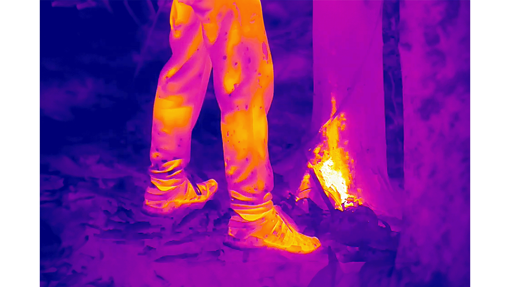
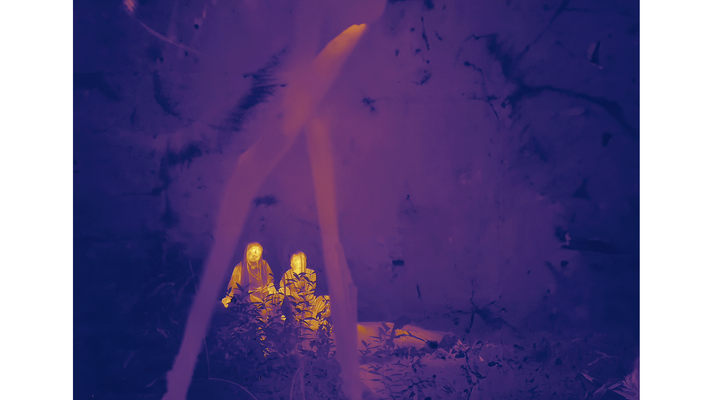
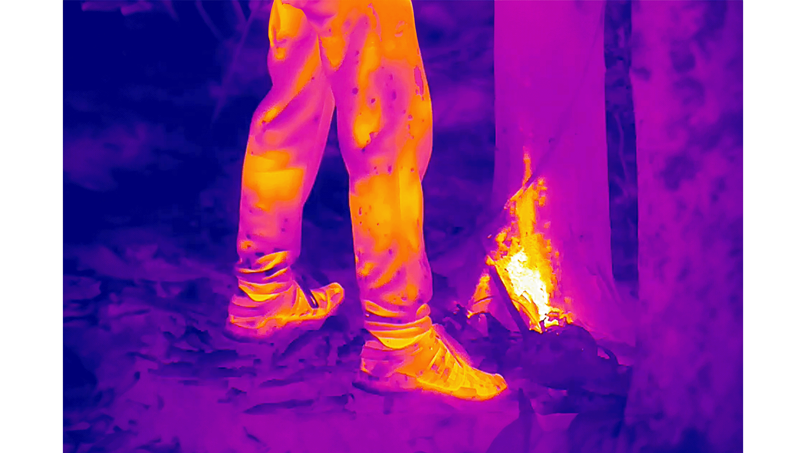
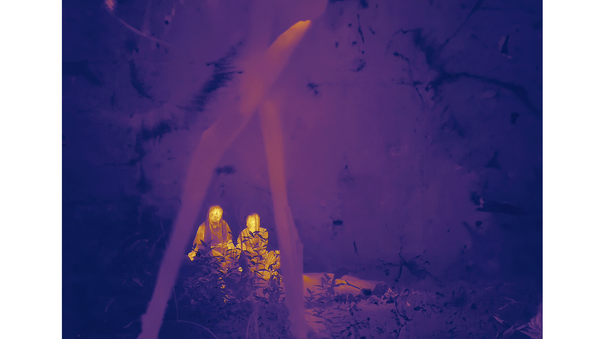

Robert Zhao Renhui
curated by
Singapore Pavilion
The 60th International Art Exhibition
of La Biennale di Venezia
20 April – 24 November 2024
Seeing Forest is a project conceived by Robert Zhao Renhui for the Singapore Pavilion at the 60th International Art Exhibition of La Biennale de Venezia.
In Seeing Forest, Zhao offers an evocative exploration of secondary forests—forests or woodland areas that have regrown over land disturbed by human development. Often taken over by plant and animal species introduced to Singapore in the 19th century, these thresholds zones between primary forests and developed urban areas offer insights into a complex web of human and non-human coexistence.
The patient observation of a natural world that we can never fully comprehend is a hallmark of the artist Robert Zhao’s work. Since 1998, under the auspices of his own fictitious Institute of Critical Zoologists, Zhao’s many and varied projects have served as a lens that highlights the resilience of nature and the interactions that result from when it intersects with human life and society. In the last eight years, he has been documenting various secondary forests in Singapore to capture footage of phenomena rarely or never seen before. For this exhibition, the artist’s accumulated observations are condensed and organized into thought-provoking installations that explore the real and imaginal dimensions of such a secondary forest space.
The main work is a two-channel video, The Owl, The Travellers, and the Cement Drain (2024) displaying scenes of the secondary forest: its trees; animals; abandoned tents of migrant workers; birds flying in to drink from a concrete drain; as well as an unstable, fluctuating narrative of two human characters journeying through it. In conversation with this piece is a sculptural video installation Trash Stratum (2024) comprising multiple screens that show various creatures visiting the forest arranged around a deconstructed cabinet of curiosities, which alludes to and destabilizes colonial methods of natural history classifications. Also within this structure are a number of objects that the artist found during his exploration of the forest, such as old bricks and bottles, referring to the presence of human histories that are entangled with natural ones.
Seeing Forest invites audiences to experience the layered complexities and realities of the world around us. We see how the island of Singapore has evolved to the present landscape, revealing some of the ways in which human urban design influenced the natural world and how the natural world responds to it. Seeing Forest reveals how these transitional spaces can offer points of intersection for history, discovery, and sustainability, while suggesting that the edge of a city — especially one that is so carefully planned — may be the most intense frontier in existence.
After Venice, the exhibition will continue at the Singapore Art Museum, opening in January 2025.
curated by
A Guide to a Secondary Forest of Singapore
Archival pigment print, 150 × 108 cm. (2024)
This imaginary forest map presents an overview of the artist's extensive explorations and research in Singapore's secondary forests — the ones that have sprung up after the destruction of the primary vegetation.
Reflecting the rich ecology of the secondary
forests near his home and the forgotten Queen’s Own
Hill area — which comprises native and foreign
species that interact to create new ecological
situations — the map incorporates symbolic stations
and features that Zhao encountered on his frequent
walks and via remote sensing cameras over an
extended period. Notable natural and man-made scenes
and elements depicted include a shattered concrete
drain revealing a re-emerged river, which became
vital to the forest's living organisms.
2.
Buffy

Mixed media, dimensions variable. (2024)
The Buffy fish owl is a bird native to Southeast Asia. The image of Buffy with its back turned to us is a reference to the Heraclitan fragment, “nature loves to hide,” which alludes the true essence of things is not easily grasped or understood by human beings.
3.
The Owl, The Travellers and The Cement Drain
 



Video, 2 channels, 16:9, colour and sound (3
channels), 46 min. (2024)
This two-channel video features footage collected over a long period, including moments captured during the artist's forest visits, from his apartment on the 26th floor via a zoom lens, and from motion-capturing and body temperature cameras that he installed in the forest.
This secondary forest is a place where natural
and man-made elements interact, introduced and
native species coexist, and past and present
intertwine.
Abandoned tents languish under the trees. Animals and migratory birds rest on a trash bin and a broken concrete drain. Remnants of military facilities from the British colonial era and the Japanese occupation, as well as items left behind by migrant workers are scattered and buried in the forest. Layered onto this landscape is the unfathomable narrative of two travellers passing through the forest, who speak of things seen in the forest and things the forest sees.
The juxtaposition of the two screens showcases the contrast and interaction between the natural world and the events caused by human interventions. Through this, the artist prompts us to reimagine these forests, which are continually shaped and erased by urban expansion, as a mutable space of possibility where the boundaries between human and non-human, and native and foreign are dismantled.
An introduction to a secondary forest
in Singapore in ten scenes:
From the window of my flat, I can see the edge of the forest
In Singapore, urban and natural spaces are often in close proximity, with development constantly shifting the boundaries between such spaces.
Travellers
Two travellers make their way through the forest and talk about spirits. Overhead, parrots fly about.
The symbols of the divine appear in the Trash Stratum
The camp of an illegal immigrant who once lived in the forest becomes a congregation point for animals. Objects in the camp, including buckets, bottles and a black trash bin become crucial to their survival.
The Cement Drain
A natural stream bed re-emerges as the concrete drain that was built over it in 1935 disintegrates.
There is another world and it is in this one
Wild boars and humans cross paths at the edge of the forest. Two travellers discover an old stone slab from a former British military camp. Sambar deer observe from nearby. A selection of historical images of the secondary forest from the 1900s to 1940s are shown. A monitor lizard travels through the forest.
New worlds
The travellers observe happenings in the forest. Animals explore objects left behind by humans.
Coming back as a boar
I observe a wild boar giving birth from my window. Nearby, a forest is being cleared.
A deer walks to the end of the world
Sambar deer appear in the forest. Until recently, they were thought to be extinct in Singapore. It is not known where the current population comes from.
9: Who knows what the parrot knows?
At 7pm every day, parrots flock to this tree to roost. The travellers come to the end of their walk in the forest, and one of them decides to relieve himself.
View from my window, 2014 and 2024.
4.
Trash Stratum
Video, found objects, mixed media
Video: 12 channels, 16:9 aspect ratio, colour and sound (4
channels), 46 min. (2024)
The central structure of the installation is a crumbling cabinet made of stacked wooden boxes, which both harks back to the concept of a cabinet of curiosities and challenges the colonial approaches to collection and categorization that are associated with it.
Within this structure, 12 screens show various
creatures visiting a watering hole in the form of an
abandoned dustbin. They are interspersed with
various objects from the forest that serve as
reminders of human history. Collected during the
artist's research or discovered as physical traces
entangled with exposed roots, the footage and
objects speak to transformations over time within a
place, and the endless reconstitution of the forest.
Through destabilizing colonial narratives of control over nature, Trash Stratum imagines more fluid relationships between the human and nonhuman and reminds us of our entangled existence.
-
A selection of objects and items found on and
around Queen’s Own Hill:
- Smooth-coated Otter
- Crab-eating Macaque
- Common Tree shrew
- Plantain Squirrel
- Reticulated Python
- Cobra
- Painted Bronzeback
- Oriental Whip Snake
- Water Monitor
- Clouded Monitor
- Common Sun Skink
- Buffy Fish Owl
- Collared Scops Owl
- Black Bittern
- Von Schrenck’s Bittern
- Malayan Night Heron
- Black-crowned Night Heron
- Red-legged Crake (Breeding)
- White breasted Waterhen (Breeding)
- Common Kingfisher
- Collared Kingfisher
- White-throated Kingfisher
- Orange-headed Thrush
- Black-throated Laughing Thrush
- Red-billed Blue Magpie
- Japanese Sparrowhawk
- Changeable Hawk-eagle
- Oriental Honey Buzzard
- Brahminy Kite
- White-bellied Fish Eagle
- Brown-chested Jungle Flycatcher
- White-rumped Shama
- Siberian Blue Robin
- Greater Coucal
- Red-whiskered Bulbul
- Large-tailed Nightjar
- Straw-headed Bulbul
- Asian Koel
- Yellow-rumped Flycatcher
- Crow-billed Drongo
- Tiger Shrike
- Rufous Woodpecker
- Pin-striped Tit Babbler
- Banded Woodpecker
- Ornate Sunbird
- Blue-winged Pitta
- Malaysian Pied Fantail
- Greater Racket-tailed Drongo
- Pink-necked Green Pigeon
- Asian Glossy Starling
- Javan Myna
- Red Junglefowl
- Common Emerald Dove
- Oriental Magpie Robin
- Chestnut-winged Cuckoo
- Common Flameback
- Crimson Sunbird
- Asian Brown Flycatcher
- Mugimaki flycatcher
- Brown Shrike
- Crested Goshawk
List of species observed in a Gillman Forest, a one-hectare secondary forest in Singapore, from a single random spot measuring 1 square metre behind an old colonial building, between 2016 and 2022:
20 April –
Seeing Forest:
Curator's Introduction
by Haeju Kim
A lush forest of tall trees, revealed through the fog; against this backdrop, we see skyscrapers, soaring even higher. A bulldozer pushes a tree out of the way and its crown of leaves shakes as if in a gale. Various household items discarded by migrant workers who once sheltered among the trees have now become watering holes for owls and lizards; frogs lay their eggs there. A monitor lizard drags a scavenged pig’s head through the trash, washed downriver by the currents. Wild boar and sambar deer follow the boundary of the forest, demarcated by a road. They are shifting their habitats and trajectories of movement to accommodate the shifting location of the forest itself, transformed by development...
After nightfall, two unidentifiable people
walk through the forest. The image—reduced to
colors and silhouettes by the thermal
camera—renders their appearance even more
abstract. They appear lost, or perhaps they are
finding their way somewhere. They walk, urinate,
look closely at the ruins of a building, then
talk about the ghosts of the forest and what
remains after death. Then they list what exists
in the forest.
“Who’s watching?” asks Yazid.
Umi answers. “All of them lah.”1
Face to Face
The first chapter of John Berger’s About Looking is titled “Why Look at Animals?” In it, Berger reflects on the significance animals hold for humans, and how mankind’s perspective on animals has changed over time, inviting the reader to rethink the relationship between humans and animals once again. To Berger, the birth of the zoo commemorated a new impossibility of natural encounter between human and animal, following a fundamental shift in the way humans view animals. As the longstanding relationships among independent human and animal life were dismembered by fledgling forms of development, more and more humans came to view animals almost entirely as objects.2 With the advent of the modern city, humans began dividing up and designing locations according to the various social needs and functions. Along the way, nature writ large—including animals—became objects requiring management that were best kept apart from prioritized human activities. Humans razed forests to the ground to make way for housing and building complexes, then planted new trees to create parks. Singapore is a country where the concept of nature management was clearly articulated from the earliest stages of city planning. In 1967, the vision of a “Garden City” drove the creation and management of green spaces within the city; by 1988, the policy was reframed as “City in the Garden,” ensuring the management of urban nature remained a priority within the government’s agenda. Of course, the island’s complex relationship with nature had already been framed by colonial affairs in the nineteenth century. Famously, the history of Singapore’s Botanic Gardens and Zoo can be traced back to Sir Stamford Raffles, a British colonial administrator and avid collector of flora and fauna.3
As the massive destruction of the natural world caused by industrialism and capitalism has come to be understood as a root cause of the ongoing climate emergency, ecological perspectives that engage this reality are garnering more and more interest. Robert Zhao Renhui, however, was incorporating ecological perspectives into his praxis long before such discourse became an established feature in the world of contemporary art. Starting in the mid-1990s, as a young student curious about flora and fauna, Zhao has been observing nature and its various phenomena through his work, questioning the way humans view nature and even founding a semi-fictional research organization, the “Institute of Critical Zoologists,” to further explore the various “spectatorships” of nature.4 Beyond considering how to see and treat nature from a human perspective, Zhao’s efforts have been geared toward practicing different methods of observation to better see and hear how nature chooses to reveal itself—using photography, video, and installation to try and unpack the sheer complexity of the relationship between humans and nature.
The primary subject of the “seeing” in Seeing Forest is both human and nature, at the same time. But how, then, to recreate nature’s own act of “seeing”? Zhao’s main medium is the camera, and the camera necessarily starts from the position of human technology. And yet, simply imagining or presenting the biological gaze of animals in the name of reproducing the gaze of “nature” is itself an anthropocentric proposition. As such, with the caveat that any exploration of the natural world’s perspective is definitionally mediated by humankind, and therefore interpretive, the question becomes: so how, then, do we bring humans and nature face to face?
The term “seeing” here includes not only the act of visually perceiving or observing something, but also the actions and reactions that follow from such physical perception and understanding. In other words, what is captured is not just the “seeing” of any physical eye (be that of the human or the natural world) but also the observation of human interference with nature (resulting from the perspective of human society on nature), and how nature, in turn, reacts to such interference; by observing and recording both from a third-party remove, the artist seeks to uncover the kinds of complex events that lead to seeing as well as perspective and action. These interactions, of course, are unpredictable and revealed only gradually over a long period of time, making them impossible to capture in advance, or, indeed, illustrate in just one or two short scenes. Therefore, the artist is required to observe and record over the long term.
The scenes that make up The Owl, The Travellers, and The Cement Drain (2024), a two-channel video, were selected and edited from a vast pool of footage collected over the long term using a range of different cameras in various situations, including moments from the artist’s own forest visits to captures from a zoom lens used to shoot from his twenty-sixth floor apartment, not to mention motion and body temperature cameras he installed in the forest. As most are a combination of scenes shot with very little camera movement, viewers are able to take their time observing the movements that occur deep within each scene as they unfurl against a fixed background. This is video, yes, but the viewing experience has the pacing of flipping through a deck of still slides, generating a quiet rhythm somewhere between stillness and movement. The juxtaposition of the two screens, meanwhile, showcases the contrast and interaction between the natural world and the kind of events generally caused by humans. For example, when the screen on the left shows a pack of wild boars passing a hill, the screen on the right shows a crew of workers before they start construction, surveying the same location. When one side shows the forest being dug up, the other shows the animals fleeing the area for another part of the forest, or perhaps a time-lapse of a growing plant; culled from hundreds of hours of footage, these stories of mutual interference between nature and human society play out in a nonlinear fashion.
New Forest 5
For Seeing Forest, Zhao zeroes in on the edge where the interference and response between human society and nature is most evident: namely, Singapore’s secondary forests.6 Secondary forests, which cover about 4 percent of the island nation, are living testaments to the vitality and resilience of nature, taking over neglected plots of bare land where original tree growth was cleared for development or cultivation. Though the artist has frequented these secondary forests for nearly a decade, he has come to pay particular attention to the changes wrought by development around the Woodlands neighborhood, directly facing his high-rise apartment, and the forests adjacent to Gillman Barracks, where he held an artist’s residency at NTU CCA, finding himself intrigued by the fact that these new forms of life were emerging in spaces so close to the sphere of his own daily life.7 Over the course of countless visits spent observing the minute details of what goes on within, Zhao has found, too, that the formation and transformation of these forests is intertwined with the history of Singapore since the nineteenth century. Note, for example, the fact that so many of the plant and animal species that make up the secondary forest were introduced to the island relatively recently.8 See, too, how the tents and detritus left behind by migrant workers who once sheltered among the trees of Gillman Barracks—not to mention the cracked remnants of English colonial waterways—are now utilized by these same animals. The fact that different forms of migration have so shaped the formation of this forest demonstrates how secondary forests both mark and manifest key connections between society and nature.
Zhao is particularly struck that so many rare birds seek out the secondary forest. The secondary forest around Gillman Barracks is a stopover site on established East Asia-Oceania routes followed by millions of migratory birds, and the artist discovers that human traces left in the forest, like abandoned drain and trash bins, are actually useful to the birds as they rest. Along with these migratory birds, we rediscover the value of the secondary forest as both a space that preserves the memories of the past and a space of ecological diversity where native flora and fauna mix with other species more recently introduced to the Singapore ecosystem. To document this secondary forest, currently at immediate risk of development into yet more apartments and other buildings, is to create an archive of an improbable place where urbanization and semi-wild nature intertwine.
Trash Stratum (2024), which takes the appearance of a crumbling cabinet, is an anti-monumental monument set in response to the combination of human history and new forest. The form of the structure itself, made of stacked wooden boxes, is intended to include a paradoxical take on the Wunderkammer (“Cabinet of Curiosities”) method of collecting, categorizing, and organizing. Many of the objects themselves are empty: empty albums used to collect postcards from the British Empire’s various colonies, empty bottles and objects left behind by the Japanese soldiers who occupied Singapore between 1942 and 1945 and found themselves stationed at this former military installation, and broken brick fragments are jumbled up in this so-called cabinet alongside screens showing footage of animals coming to drink from empty trash cans left behind by migrant workers. These objects were either collected over the course of the artist’s research or are literal traces of the past discovered during his explorations of the forest, entangled in the exposed roots of a fallen tree. Indeed, the horizontal spread of the cabinet itself resembles a tree’s roots as well—an intimation of the deeply tangled nature of the transformations in human time and place that have occurred throughout the forest’s own reconstitution. Here, the secondary forest is recreated as a tangled deposit of different time periods and histories that is simultaneously a living space, sought out by an endless stream of animals.
Nature's Own Way, And, What Lies Beyond the Visible
Moving away from a gaze that actively objectifies nature does not necessarily mean moving away from any artificial techniques and methods to try and reduce the natural world to some primitive state. As Bruno Latour says, “There is nothing on earth that is precisely ‘natural,’”9 and indeed, considering the ostensibly “primitive” state of the natural world to be an ideal of harmony that humankind should strive to achieve is itself a rather romantic and anthropocentric interpretation. In place of such restorative ecological lenses, Zhao himself appears to lean more towards the viewpoint of scholars like Fred Pearce, who posit that the natural world has its own life cycles and powers of resilience.10 Where restorative ecology focuses on quick fixes, leaning on scientific and technological methods, the artist’s explorations instead tend to pose more fundamental questions about the complex relationship between humans and nature. He strives to understand the dynamics of natural ecosystems from the past to the present, as well as the various interdependencies, paradoxes, and tensions with human society that have sprung up, and then gives expression to this process within the frameworks of visual art.
Based on his own empirical knowledge, gained from years of observation and exploring the forest, Zhao understands that nature does not reveal itself easily. The symbol of the eagle owl with its back turned11 is an expression of the old adage: “Nature loves to hide.”12 Whether it is hundreds of parakeets wheeling through the air every evening at the same hour, gathering to perch on a particular tree in the Choa Chu Kang neighborhood; or, a tapir, one day, swimming over from the Malay Peninsula all the way to Singapore; or, the beautiful lace-like “crown shyness”13 that regularly occurs among Albizia trees—to Zhao, the many scientific hypotheses are always counterpointed by many persistent unknowns. Life in the secondary forest is not always friendly to outside intervention, nor—as the artist noted after one actual near-death experience, when a huge tree came crashing down mere inches behind him— can it be called a safe space. Even behind his camera lens, zooming in and out, so committed to seeing all that can be seen, he also always asserts that yet more still lies beyond what is visible.
Seeing Forest reveals that life not only exists behind the everyday of this city so known for its urban development, but that these lives are in motion, dynamic; it shows us that these various ac- tors spend their own life force to divide up and utilize the full scope of this island. And it is the very diversity of these entanglements and disjunctions, as the exhibition asserts, that enriches all life on the island of Singapore—and beyond. Zhao conveys the importance of learning to listen with care and observing closely when it comes to the natural world, reaching beyond notions of protecting and managing it to consider how human society might fully coexist with the wide-ranging and unknown life forms that are already among us, or well on their way.
Lives at the demarcation line between city and nature find themselves mutually transformed, even as unintentional organic orchestrations change the landscape itself. Nature selects for relationships over independent entities. Can human society follow in kind, surrendering its insistence on control to join the broader rhythms of natural communication as another participant in an interdependent network? Can we—rather than constructing our own safety nets and drawing ever more boundaries—actually build community together with bodies that are wildly different from our own?
Robert Zhao Renhui’s exhibition showcases the unique coexistence of city and nature in Singapore’s secondary forests, presenting it not as an example of a scenario where nature is destroyed by human intervention, but rather a point of entry into the symbiosis and harmony to come; that is, if we were to commit to acknowledging and allowing the chaos and complexity involved, including those things and beings unknown and unknowable.
Translated from Korean by Maya West
1 This introduction references scenes and/or quotes from Robert Zhao Renhui, The Owl, The Travellers, and The Cement Drain (2024), a video piece in the exhibition Seeing Forest. The script of Umi and Yazid was written by Joel Tan.
2 John Berger, “Why Look at Animals?” [1977], About Looking (New York: Pantheon Books, 1980), 3–28.
3 Upon his return home, Sir Stamford Raffles founded the Zoological Society of London in 1826 and established the London Zoo in Regent’s Park in 1828. At the time of its founding, the London Zoo was the first modern facility of its kind to be located in the city center that was both open to the public and served as a scientific institution. It also constituted a symbol of colonial power.
4 Founded in 1998 by the artist, the “Institute of Critical Zoologists” is both a “research lab” that blends fiction and reality and a website that catalogues his work. Under this name, Zhao sometimes borrows from scientific language and methodologies to use natural history as a critical frame in his own work. On the website, the ICZ is described as follows: “The institute of Critical Zoologists is the first interdisciplinary scholarly centre dedicated to promoting critical dialogue on the principles and practices of animal spectatorship and animal-related policies in the fields of social sciences, ecology and the arts. The institute employs a variety of methods to pursue its mission—engaging in research, classification and exhibition.” See criticalzoologists.org.
5 New Forest is also the title of a two-volume artist book published by Robert Zhao Renhui. New Forest 1: A History of Cows (2020) compiles records of wild cattle herds found in Singapore, while New Forest 2: Wild Worlds (2022) juxtaposes footage of ongoing deforestation against the process of a wild boar giving birth, filmed from the artist’s apartment during the pandemic.
6 “Consider, indeed, the question of what’s left. Given the effectiveness of state and capitalist devastation of natural landscapes, we might ask why anything outside their plans is alive today. To address this, we will need to watch unruly edges.” Anna Lowenhaupt Tsing, “The Arts of Noticing,” The Mushroom at the End of the World: On the Possibilities of Life in Capitalist Ruins (Princeton University Press, 2015), 20.
7 Built in 1936 under British colonial rule, Gillman Barracks was a military installation. During World War II, it and its surroundings saw battle against Japanese forces. After Singapore’s independence, the site was used as a training facility for the Singapore Armed Forces before finally becoming a contemporary art cluster with art galleries and events in 2012.
8 The Albizia tree, in particular, is believed to have been introduced to Singapore from South America in the 1870s. Due to its rapid soil adaptation and growth, it soon became the main tree in these secondary forests, as well as a nest- ing site for eagles. Because they have thin roots and tend to fall rather easily, those once planted along city streets have even been removed for safety issues. From 31 August to 3 September 2023, Robert Zhao Renhui created and performed Albizia, a theater performance about Singapore’s secondary forests, at the Esplanade Theatre in Singapore.
9 “On Earth, nothing is exactly ‘natural’ if we take that term to mean that which has not been touched by any living being: Everything is raised, put together, imagined, maintained, invented, intricately linked by agencies which, in a way, know what they want, or in any case aim at a goal that is exclusively their own, each agency for itself.” Bruno Latour, After Lockdown: A Metamorphosis (Cambridge: Polity, 2021), 20.
——
Two People, Through a Forest, One Day (Actors'
Script)
by Joel Tan
Yazid is peeing. Hot streams of pee. Then a second figure emerges, Umi, watching.
Umi: Fuck lah
Yazid: What
It's
What
Coming towards (me)
Then just
Stinks
Your pee then
You eat petai or
Can you don’t
What
Watch
Why
I can’t…
You still got summore?
Fuck off lah don’t—
Okay.
Umi moves away.
More peeing.
You ever pee before with so many
people watching?
What?
Like doing show lidat
Who’s watching? Fuck are you still watching?
All of them lah.
What. Who?
Eh don’t leh fuck.
Here got what, got
Audience.
Hantu kan?
Got… Fuuuuck lah
Kampung ghost. Tree ghost
That one is spirit not ghost
Yah not all ghosts are bad.
Some are bad.
Japanese ghost?
Here got meh
Yah.
The
Those relatively new.
That one Chinese lah
Japanese
You sure? Wait I need to concentrate.
Not just ghost also got insect
Insects.
Bird, squirrel, all sitting in the tree
watching you shit.
Wild boar.
Here got wild boar?
Confirm.
Fuck, that one is no joke
You more scared of wild boar than ghost?
Ghost you can negotiate.
Negotiate what fuck
Help them find closure, /find the long lost relative…
(laughs)
That’s all they want kan. Some of them don’t even know the
Who?
The
Okay I’m done, let’s go.
The Japanese one, don’t even know the war is over…
Issit. You got meet before?
Yah why not.
Got crocodile also.
That one no joke.
Ghosts can negotiate.
Crocodile
cannot.
Fuck here really got crocodile?
Just now you never see?
What? Where?
Near the tentage that side.
Never. Eh, are you serious not.
They’re harmless one. You just don’t make sudden movements can liao.
Harmless?
Yah they’re our friends. They eat bad ghosts one.
Crocodiles?
Yah, got see before.
(laughs)
Like eating sushi.
This one the Jap ghosts
most scared.
How come?
‘cuz bayonet.
The teeth.
Mm.
Then Ang moh ghost?
Ang moh ghosts scared boar.
Why?
‘cuz boar their country also got.
Issit. Got see before?
Got, got see one ang moh ghost kena lunga with the two… that one?
Tusks
Then stuck to the tree.
(laughs)
‘cuz why? ‘cuz dunno how to run.
Zig zag
‘cuz dunno how to avoid the tree.
Then kena stuck to the tree.
Kena eat by
ants.
Now the ants also involved.
The ants are the most involved.
Irritating sial the ants.
See, they coming for my leg.
Why?
‘cuz my pee confirm sweet.
Why?
‘cuz I also sweet
Gross
They’re passing by a rockface. Ruins.
How long more?
You hungry?
What? No, I tired.
In front got rock can sit.
Kay.
turns back to look.
This one whose house?
Last time one.
Look like condo sial.
(laughs)
This area think the valuation quite high summore.
I know right.
What?
Here got one ang moh ghost.
Issit.
Very long liao.
Issit.
Then got earthquake.
Earthquake?
Yah the ground like (boom) then open up
How you know
I saw
—
Open up and eat him
like butter cookie.
Heart attack or maybe stroke.
‘cuz you know last time here got one hill?
Is it?
Yah very tall one.
The ang mohs blew it
up.
For sand.
To reclaim the…
Oh yah.
So during hungry ghost
the hill ate him back
like butter cookie.
While he was shitting.
So this was a
Toilet.
Next time condo.
Same lah, condo, toilet.
The two sitting on a rockface. In the distance, we see two other forms, obscured, blurred, moving gently, fucking. Our two figures sit and watch for several moments, then
Later there got anything to eat?
Banana.
Oh.
You want meat you must ownself catch.
Will it hurt?
Mm.
Did it hurt, when
It’ll be fine.
Really.
Like ant bite.
Like
Short ant bite. Then
Then
Then you’ll see lah.
How you--
I bring how many people already.
Yah okay.
Got music.
Issit.
Yah got. Your body will tell you what to do don’t worry.
Okay.
You scared ah.
‘course lah.
Scared what? No one will catch one.
(laughs)
See the two of them?
You think they scared?
I think so.
Why?
‘cuz when you cum finish then you remember you’re covered in shit.
You very unromantic ah.
…
…
See, he cum already.
Can you hear it?
Yah
Psy trance?
Something lidat.
You like psy trance ‘not?
More of a house and techno guy.
You request lah.
Can meh?
It’s okay.
Jungle.
What?
I like jungle.
Oh.
Jungle never die.
I thought it’s rock?
Jungle also.
When I wake up
Mm
Will you be there?
Depends.
Oh.
But think by then you won’t care liao.
Why?
‘cuz…
‘cuz there’ll be birds.
‘cuz there’ll be ants.
‘cuz there’ll be the small river
‘cuz there’ll be the tree sort of,
how to say…
you ever got do shrooms?
yah
So you know lah.
it’ll be like that
sort of
like life flashing past your…
‘cuz once you let go
it’s just like
all the ants…
all the birds…
y’know?
you’re the tree
the tree is you
that kind of thing
wow
very shiok one don’t worry.
Okay
You just gotta let go
Okay
Let go your body and
Just dance
Dance
Yah like an idiot
Dance like an idiot
Yah really feel it
Okay
Feel it take over your body
Okay
‘cuz that’s where it’s always been right?
Where anything starts.
Yah
The wind
The ants
The birds
The tree
The rocks
The shit
The piss
The piss
All dancing.
Correct.
What if the crocodile
What thing
Like, the crocodile come and eat me?
That’s fine.
It’s different than…
It’s not revenge eating.
Just
eating.
Is it?
‘cuz then you’ll be in the river.
Okay.
And then eventually the chicken
Okay
And then the eagle
Okay
And then the tree
Okay
and then the flower
and then the sky
yah
and then the sun.
okay.
Okay?
Okay come.
Wait
What
I need to pee
Again?
Yah
Okay, no rush.
As he does, to himself, quietly.
River, fish
Fish, bird
Bird, ant
Ant, fruit
Fruit, monkey
Monkey, tree,
Tree, flower
Flower, sky
Sky, sun,
Sun, leaf
Leaf, boar
Boar, crocodile
Crocodile, ant,
Ant, fruit…
Then sun…
——
Surprised by Birds
A conversation between Robert Zhao Renhui & Yong Ding Li
Yong Ding Li is a conservation biologist with a keen interest in the conservation of migratory species, wetlands, and tropical birds. He works widely across the region to develop and implement projects that protect ecosystems and species, including some of the world’s most threatened wildlife, including the Spoon-billed Sandpiper. He has written extensively on biodiversity and species conservation in the Asia-Pacific, including guide books to the birds of Singapore, Malaysia, and China. He is the recipient of the Society of Conservation Biology’s Early Career Conservationist Award of 2023. He has been friends with Robert Zhao Renhui since they were sixteen, and has acted as a frequent collaborator and consultant on Zhao’s projects. What follows is a conversation in which they discuss their friendship, their mutual influence, and the significance of secondary forests in Singapore.
Robert Zhao Renhui
Do you remember when we first met? It was 1999,
the last day of secondary school. You were in
the academically strongest class in our level
and I was in the worst, so we never really spoke
to each other. But that day, you were running an
exhibition at the school library, called
Surprised by Birds, featuring your
drawings of birds and natural spaces in
Singapore. I was especially fascinated by a
little baby python that you had preserved in
alcohol in a bottle. At that time, I also had
preserved a python, a piece of roadkill, as well
as other sorts of interesting animals I picked
up. So, because of your preserved python, I
spoke to you, and we became friends. When we
were teenagers, we spent most of our time
exploring various natural spaces. At that time,
you were already a very serious birdwatcher, and
I liked taking photographs of Singapore
landscapes that did not look like Singapore. I
was also an avid collector and, like you,
collected taxidermy specimens. I think we had
conversations about the pressures of nature
adapting to Singapore’s urban landscapes. Most
of the roadkill I found were near newly
developed neighborhoods near secondary forests.
We spent a lot of time exploring natural spaces that were on the edges of the city, and shared information with each other. I guess we mutually influenced the direction of each other’s work a lot of times. I remember calling you in 2004 to tell you about a wild boar piglet roadkill I found on a road in Lim Chu Kang (it’s still in a jar of alcohol in my old house). Six years later, you wrote a research paper about the population of wild boars increasing in Singapore, and advocated for further research and conservation management for the species. It was one of those early wildlife management papers as no one had written about them those days. I then referenced your research in The Quieting and the Alarming (2013), my body of work about our relationships with wild boars in Singapore.
After that, I always kept you in the loop about my projects. I think I am most inspired and intrigued by the relationship you had with forests. I remember that you would simply lie down on the ground in the rainforest and gaze straight up for hours into the canopy just to look at birds. It taught me about being attentive and quiet in observing nature, and I had gradually learnt how to look at it as well. It also helped that when I was exploring these spaces that I had a nature expert who knew how to identify species and knew interesting things about their natural history—I myself learnt a lot about identifying birds by their calls through you. Did collaborating with me on my art projects change your mind in any way?
Yong Ding Li Let’s see. Your work made me ponder and reconsider the importance of secondary forests for wildlife. In our early explorations, we did spend some time in many areas of secondary forests. In 1997, we went birdwatching in a patch of forest near Bukit Batok Road, now cleared, as well as a huge plot of reclaimed land in Changi that we used to call Tanah Merah. We took the bus from Tanah Merah MRT—simply because of its proximity to the ferry terminal. We didn’t know much about ecology, but the main reason why we went there was to look at rare birds that we were hoping for and had been spotted by other birdwatchers.
Then I learned more about primary or old growth forests like Bukit Timah Nature Reserve, and the diversity of plant and animal species in these places. Old growth forests eventually became the focus of my nature walks, research, and documentation, and I must admit that I did not pay much attention to secondary woodlands afterwards.
Preconceived notions about what secondary woodlands (as straggly, ecologically boring, filled with common invasive species) got the better of me. Or maybe the obsession with primary forests just made me not think too much about secondary forests and woodlands. I’ve actually never been to Gillman forest until your art projects there. First impressions were: “Just another Albizia and simpoh air [tree shrub growing on swampy ground] woodland with a few Tembusu trees here and there.” At that point, I didn’t know much about the history that is buried under the forests here of course, nor the migratory birds that you have documented!
RZR Yes, I started exploring Gillman Forest in 2016 during my residency at NTU Centre of Contemporary Art. I asked you along to explore the space with you. Do you remember your first impressions of the forest? You said rather dismissively that I wasn’t going to find anything interesting. We were also attacked by a drongo that swooped down to peck our heads the moment we stepped in. We had to carry umbrellas to protect ourselves. For the rest of the year, whenever we entered the forest, this bird would swoop down to attack—then it stopped. I often wonder why it stopped. Romantically, I think it was because of a mindset shift in me that perhaps the bird sensed. It was only after one year that I came to respect the forest as a home, an independent entity, rather than a project space I could mine for art. I was more interested in going inside to understand and feel it than to make any specific artwork. That was why I set up all the camera traps in the forest, to know more about what goes on in there when people are not around.
Does Gillman feel any different from the rest of the forests you know, after so many years?
YDL Not at first glance. From afar, it looks like just another woodland with a few tall trees sticking out! Many woodlands look like that, Dover Forest, Lentor, Bukit Batok forest, and elsewhere.
RZR Ecologists like you tend to take a particular view on so-called invasive species like Albizias but I think they are beautiful trees! Because they are tall I always see them against the bare sky and their lacy silhouettes are very striking. Anyway, I remember you finally ventured into the Gillman forest alone after I told you about the rare birds that visited the drain.
YDL I was quite surprised by your camera trap images of the animals that visited the drain. There were migratory birds like a Von Schrenck’s Bittern, the Black Bittern, and a regularly visiting Japanese Sparrowhawk; pittas, thrushes. I definitely did not expect to see these relatively rare birds in such a small patch of woodland just a few hundred meters from a busy road, and with lots of walkers.
Basically, Gillman forest is one stop of thousands of migratory birds on the East Asian–Australasian Flyway, which millions of birds use in their migration. The flyway stretches from Russia to across much of Southeast Asia. On the way, they stop by wetland habitatsto rest and recharge. After numerous visits to Bidadari, another secondary forest, I’m beginning to believe that the smaller forests and woodlands in Singapore, especially the secondary forests, are conducive stops for migratory birds. Gillman easily hosts ten to twenty migratory bird species, and there are probably others we have not seen. Gillman is also an oasis for adventive birds from faraway lands. So, Gillman is unique in that way. It is more hospitable than we thought. It has a mix of migratory species, foreign species that originally did not belong to Singapore ecosystems, but have established themselves here, and native species like tree shrews—again not something I expected.
RZR There is a sense of this ecological diversity that I am trying to capture in my work. I feel that secondary forests are resilient and adaptable spaces for wildlife in Singapore. They absorb elements from everywhere and some kind of quasi-natural equilibrium is achieved. They don’t discriminate against who belongs and who doesn’t, and many of its spots that are most conducive to wildlife—watering holes in the form of abandoned dustbins and broken cement drains—are actually remnants of human habitation and development…
YDL That’s a good point. I have also come to realize something: in Singapore, forests can retain memories much more so than developed land. When apartments are built over a forest land as it has recently happened in Tengah, the forest is lost, most certainly irreversibly so. At the same time, the memories of the land and the structures that existed below are also lost forever. In Singapore, most secondary forests probably existed over land that was once used by people for something else, such as farms, plantations, and even military barracks. Singapore is an interesting case study. When you destroy a secondary forest today, you are no longer just destroying the nature that is above the ground. You may well also be erasing the history that is buried under it forever, and the soil. When you build a block of apartments over a forest, you have to dig deep to put in the foundations of those buildings. You need to remove lots of soil, which contains fragments of who and what once lived there. And once the buildings are built, you may never be able to access what lies under them unless you can remove those buildings one day and dig deep into the ground.
These little patches of secondary forests don’t just preserve nature, rare species, and ecological processes, they also inadvertently preserve bits of history and memory that may have been from the last century. In Gillman forest, you found ceramics in the streams. In the soil, you found bits of bricks, glass, and other containers, which evidently came from the Japanese occupation years.
Essentially, nature’s takeover is comparably “gentle” on history. Letting nature run over a landscape, as it has happened here and other parts of the world, actually allows the history of a place to be preserved. I fear the day that Gillman is built over, because once that is done, the landscape here will be changed forever and what remains of the memory of this place will just be documents and a few photographs in the archives.
RZR That’s an amazing observation. It’s something that I’ve tried to capture in my video work, the feeling of sedimentation and coexistence of different timescales and histories. In the secondary forest time is somewhat thicker than in other places—there are layers upon layers of stories of animals, plants, humans, and being quiet and attentive might reveal something of these hidden worlds. The world is much richer and more mysterious than we might think.
YDL I feel that there are quite a few things that art can do that conventional science has repressed. Art can provide a platform to tell stories that make us reflect on our values and relationships with nature.
RZR Some people like to ask about the conservation angle to my work. Actually, I don’t necessarily have a specific conservation angle. My angle is that we should just respect the variety and diversity of things and places in the world and tread very gently in our actions.
The 60th International
Art Exhibition of
Catalogue information
—
Seeing Forests (Vol. 1 of 2)
Robert Zhao Renhui
Edited by Anna Sophie Springer & Etienne Turpin
Published by K.Verlag & Singapore Art Museum, 2024
——
Credits
—
Commissioning panel
Co-Chairs
Members
Artist
Curator
Associate Producer
Graphic Designer
Catalogue Co-Publisher
Technical Manager
Sound Designer and Composer
Script Writer
Actors
Editor
Film Production Unit
Carpenters
Project Consultant
Pavilion Fabricator
Media Relations
Freight Services
Translator
Website Design
Singapore Art Museum
Special thanks to the entire team at Singapore Art Museum and the Singapore Pavilion Ambassadors.
Organised by
Commissioned by
Supported by